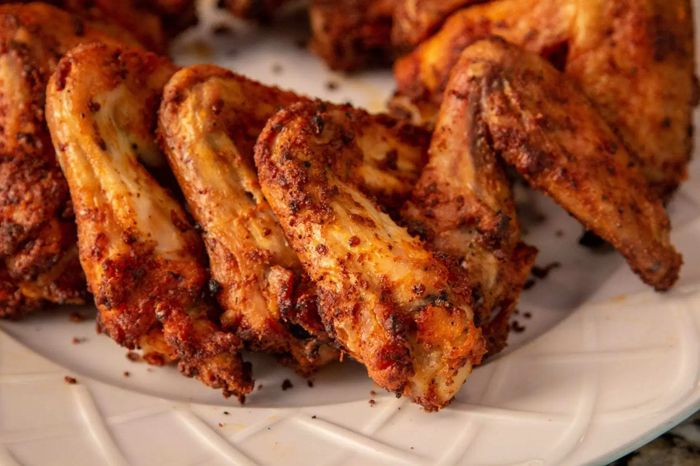

Chicken Wings

Description
We've all been there. It's the end of a long week, and you're craving saucy, crispy chicken wings,
but you also want to stay to a somewhat healthy diet. Lucky for you, this recipe will give you just that!
Ingredients
- 2kg wings
- 5tbs flour
- 3-4 tbsp chicken rub (or a mixture of spices of your choice)
- 1.5 tbsp baking powder
Steps
- Preheat the oven to 250 degrees F
- Foil lined pans with racks. Don't put on foil
- Mix the flour, chicken rub, and baking powder in a bowl
- Dry the wings as much as you can. Then, coat the wings with the seasoning mixture
- This is the important part. Place the wings on the rack,
and cook it for 30 minutes. This will help render the fat from the wings. After those 30
minutes, turn up the oven temperature to 425 degrees F. Cook in this temperature for about 40-45
minutes to get crispy wings.
- Remove from the oven, add whatever sauce you like (or don't, tasty either way), and enjoy!